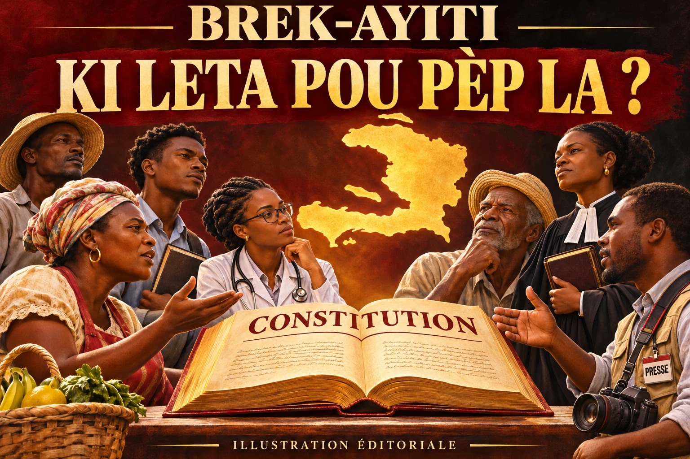
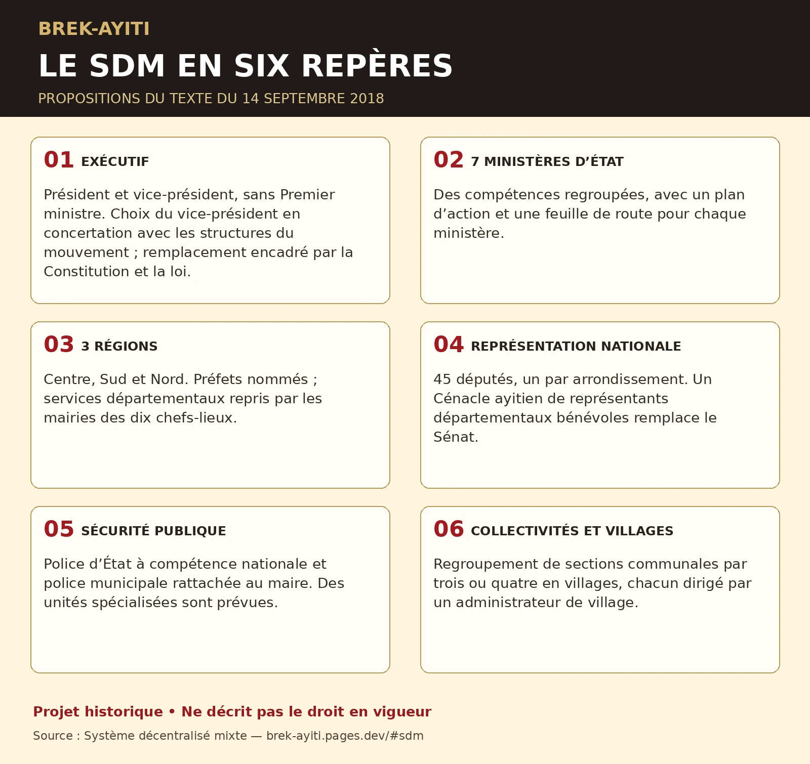

Six ans de projets constitutionnels : le peuple doit décider de son État

Depuis 2020, les pouvoirs se succèdent et les projets constitutionnels se transforment, sans référendum abouti. À l'heure d'une nouvelle concertation, BREK-AYITI demande que les citoyens puissent lire, comprendre et discuter les propositions. Notre mouvement verse au débat son Système décentralisé mixte, publié sur LinkedIn dès le 14 septembre 2018.
Par la rédaction de BREK-AYITI — 13 novembre 2026
Jeudi au ritz
Le 12 novembre 2026, le Premier ministre Alix Didier Fils-Aimé a participé à l'hôtel Ritz, à Port-au-Prince, à une rencontre consacrée à la révision de la Constitution du 29 mars 1987. Organisée par le Groupe de travail du Pacte national pour la stabilité et l'organisation des élections, elle a réuni des responsables de médias et des membres de l'Association nationale des médias haïtiens. Le Nouvelliste rapporte la présentation de travaux de commissions spécialisées. [1]
Une rencontre avec les médias peut contribuer à informer. Elle ne remplace pas la participation des citoyens. Nous demandons la publication des textes examinés, de leurs auteurs, de leurs versions successives et des changements proposés. Le peuple doit pouvoir suivre le chantier autrement que par des annonces.
Un chantier qui traverse les pouvoirs
Sous Jovenel Moïse, le processus lancé en 2020 visait une nouvelle Constitution et un référendum. Après son assassinat en juillet 2021, le chantier s'est prolongé sous Ariel Henry, sans consultation aboutie. La transition ouverte en 2024 a installé un nouveau Comité de pilotage de la Conférence nationale, créé par décret le 17 juillet 2024. Un avant-projet a été remis au CPT et au gouvernement le 21 mai 2025. [2]
Le gouvernement en a présenté les grandes lignes le 10 juin 2025. Puis une version finale et un rapport de travaux ont été remis en août 2025, selon le compte rendu du communiqué du comité publié par Le National. Les discussions de novembre 2026 doivent donc être replacées dans une succession de textes, et non présentées comme un projet resté identique depuis 2020. [3][4]
Le 9 octobre 2025, le Conseil des ministres a sursis au projet de référendum et dissous le Comité de pilotage. Le chantier repris en 2026 ne doit donc pas être confondu avec un projet resté inchangé depuis 2020. [10]
BREK-AYITI ne chiffre pas ici le coût de ces travaux : aucun bilan consolidé des dépenses n'a été vérifié pour cet article. Nous demandons précisément que ce bilan soit rendu public, avec les dépenses des comités, des consultations et de la communication.
2011 et 2012 exigent aussi de la clarté
La loi constitutionnelle votée le 9 mai 2011 a connu une publication contestée le 13 mai 2011. Le numéro extraordinaire du Moniteur du 19 juin 2012 reproduit la loi pour erreurs matérielles et annule l'arrêté du 3 juin 2011 qui l'avait rapportée. Ce parcours doit être expliqué sans réduire l'ensemble du débat juridique à une formule. [5]
Nous demandons que les autorités identifient expressément le texte de référence utilisé, les articles qu'elles souhaitent modifier et la procédure retenue. Les citoyens doivent pouvoir comparer les dispositions existantes et proposées, article par article.
Ne pas mélanger les versions de 2025 et les travaux de 2026
La communication officielle du 10 juin 2025 évoquait une fusion des fonctions de chef de l'État et de chef du gouvernement, quinze ministères, une décentralisation budgétaire, une ULCC indépendante et une affectation de 4 % du PIB à l'éducation. [3]
Le compte rendu du communiqué du comité du 29 août 2025 décrit ensuite un président et un vice-président élus ensemble, douze ministères, deux sénateurs par département, un député par arrondissement, deux collectivités territoriales (département et commune), l’élévation de certaines sections en communes et le reversement d’au moins 50 % des recettes fiscales nationales aux budgets départementaux puis communaux. Il s'agit d'un compte rendu de presse à confronter à la version finale originale. [4]
Le projet final distingue aussi le statut du vice-président : élu avec le président, il ne peut être révoqué par celui-ci, selon l’article 123-1 rapporté par Karibinfo. Le SDM prévoit au contraire son choix par le président en concertation avec les structures du mouvement et son remplacement dans les conditions constitutionnelles et légales envisagées. [11]
Nous ne pouvons donc pas attribuer automatiquement au chantier de novembre 2026 toutes les dispositions de juin ou d'août 2025. Les autorités doivent dire ce qu'elles retiennent, modifient ou abandonnent.
Le droit ne peut pas être escamoté
L'article 284-3 de la Constitution de 1987 interdit formellement une modification constitutionnelle par référendum. Les articles 282 à 284 organisent une procédure parlementaire. Cette difficulté doit être exposée aux citoyens : elle n'est pas une simple objection de convenance. [6]
La Commission de Venise a examiné les options constitutionnelles et électorales en 2024, puis le projet de décret référendaire en 2025. Ces avis consultatifs doivent être lus dans leur intégralité et ne sauraient, à eux seuls, abroger une disposition de la Constitution haïtienne. [7][8]
BREK-AYITI exige que toute démarche soit accompagnée d'une justification juridique publique et d'un débat populaire réel. Une consultation ne peut devenir un blanc-seing donné à un pouvoir de passage.
Ce que brek avait déjà publié
Le Système décentralisé mixte, ou SDM, figure parmi les articles du compte LinkedIn « Brigadiers de la Révolution Classique BREC », avec la date du 14 septembre 2018. Cette publication propose une autre organisation de l’État. [9]
Le SDM combine des préfets régionaux nommés par l'Exécutif, une organisation municipale renforcée et une réorganisation de la représentation nationale. Il propose notamment :
• Un président et un vice-président, sans Premier ministre ; le choix et le remplacement du vice-président sont encadrés par les règles constitutionnelles et légales envisagées.
• Sept ministères d'État, chacun doté d'un plan d'action et d'une feuille de route.
• Trois régions pour la représentation territoriale de l'Exécutif : Centre, Sud et Nord. Le SDM maintient des références aux départements pour les chefs-lieux et leur représentation ; il ne faut donc pas présenter ce schéma comme leur disparition pure et simple.
• Le transfert des services des directions départementales aux mairies des dix chefs-lieux.
• Une Police d'État à compétence nationale et une Police municipale rattachée au maire.
• Un Cénacle ayitien remplaçant le Sénat, avec des représentants départementaux bénévoles, et 45 députés, un par arrondissement.
• Dix maires de chefs-lieux de département, 35 maires de chefs-lieux d'arrondissement et 90 administrateurs communaux, selon les chiffres du texte de 2018.
• Des sections communales regroupées par trois ou quatre en villages, dirigés par des administrateurs de village.
• Une organisation politique autour de deux partis, national et libéral.
Les sept ministères du sdm
1. Affaires étrangères, Ayitiens vivant à l'étranger et Coopération externe.
2. Éducation, Jeunesse, Sports, Formation professionnelle et technique, Culture et Recherche.
3. Infrastructures, Environnement, Tourisme et Aménagement territorial.
4. Solidarité, Santé publique et Régulation des naissances.
5. Économie, Commerce, Finances, Planification et Agro-industrie.
6. Justice, Droits de la personne et Affaires sociales.
7. Intérieur, Sûreté et Sécurité nationale.

Tableau comparatif
Antécédents gouvernementaux de 2025 et SDM du 14 septembre 2018. Les propositions présentées en novembre 2026 restent à confronter à leur texte original. Références gouvernementales : [3], [4], [11] ; référence BREK-AYITI : [9] et texte du SDM.
| Question | Travaux gouvernementaux accessibles | SDM de BREK-AYITI en 2018 |
|---|---|---|
| Exécutif | Juin 2025 : président aussi chef du gouvernement. Août 2025 : président et vice-président élus ensemble ; pas de révocation du vice-président par le président. | Président et vice-président, sans Premier ministre ; choix du vice-président en concertation avec les structures du mouvement, remplacement selon la Constitution et la loi. |
| Ministères | Quinze en juin 2025 ; douze en août 2025. | Sept ministères d’État, avec plans d’action et feuilles de route. |
| Territoire et budget | Août 2025 : département et commune ; au moins 50 % des recettes fiscales du Trésor aux budgets départementaux puis communaux. | Trois régions dirigées par des préfets nommés ; services départementaux repris par les mairies des dix chefs-lieux. |
| Collectivités | Août 2025 : élévation de certaines sections en communes. | 10 maires de chefs-lieux départementaux, 35 de chefs-lieux d’arrondissement, 90 administrateurs communaux ; sections regroupées en villages. |
| Parlement | Deux sénateurs par département et un député par arrondissement, selon le communiqué d’août 2025. | Cénacle ayitien bénévole à la place du Sénat ; 45 députés, un par arrondissement. |
| Sécurité | Dispositions du chantier actuel à vérifier. | Police d’État à compétence nationale et police municipale rattachée au maire. |
| Partis | Août 2025 : meilleure structuration de l’opposition, selon le communiqué. | Deux partis fixés par la loi : national et libéral. |
Comparer pour éclairer le choix
Le tableau ci-dessous distingue les travaux gouvernementaux accessibles de nos propositions de 2018. Les dispositions de 2025 restent des antécédents documentés tant que leur reprise dans le chantier actuel n'est pas établie. Les ressemblances montrent des convergences ; elles ne prouvent pas un emprunt aux travaux de BREK.
Une comparaison honnête doit aussi faire apparaître ce qui manque. Le SDM doit préciser les pouvoirs et les contrôles du Cénacle, le mode de désignation de ses membres, les ressources des collectivités, les garanties contre la politisation de la police et les conditions du cumul de fonctions envisagé. Le plafonnement légal des partis à deux doit être examiné au regard de la liberté d'association et du pluralisme. Le rôle des préfets doit être distingué de celui des autorités locales autonomes.
Soumettre notre projet à ces questions ne l'affaiblit pas. Nous demandons au gouvernement de rendre des comptes ; nous devons aussi expliquer nos propres choix.
Notre exigence
BREK-AYITI demande la publication des propositions actuelles en créole et en français, avec un tableau des modifications, leur justification juridique et leur coût prévisionnel. Nous demandons des débats accessibles dans les communes et pour la diaspora, avec une participation effective des personnes déplacées.
Nous demandons également que le gouvernement explique comment la consultation constitutionnelle s’articulera avec les élections. Une échéance annoncée ne vaut ni adoption du texte ni réponse aux questions de légalité.
La Constitution appartient à la nation. Elle doit organiser des pouvoirs contrôlables, des services accessibles et des responsabilités que les citoyens peuvent faire respecter. Elle mérite mieux qu'un chantier recommencé à chaque transition.
Haïti d'abord ! Haïti toujours !
— La rédaction de BREK-AYITI, Brigade Révolution Classique
Sources et références
- Le Nouvelliste — rencontre du 12 novembre 2026
- Gouvernement — remise de l’avant-projet, mai 2025
- Gouvernement — présentation du 10 juin 2025
- HaitiLibre — communiqué sur le projet final d’août 2025
- Le Moniteur — 19 juin 2012, copie CEPAL
- Constitution de 1987 — copie CSCCA
- Commission de Venise — avis 2024
- Commission de Venise — avis 2025
- BREC — profil LinkedIn répertoriant le SDM du 14 septembre 2018
- Le National — suspension du référendum, octobre 2025
- Karibinfo — président et vice-président, articles 119 et 123-1
Les documents présentés le 12 novembre 2026 n’ont pas été consultés dans leur intégralité. La comparaison porte sur les versions de 2025 identifiées ci-dessus. La référence LinkedIn renvoie au profil de l’auteur qui répertorie l’article SDM ; le texte est également reproduit sur ce site.